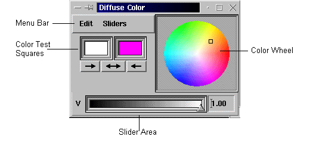

Color Editor
The Color Editor
lets you interactively change the color properties of an object.
You call the Color Editor either
-
directly from the Editors
menu to change the color of a selected object
(window: Diffuse Color)
-
from the Viewing
menu to change the background color of the viewer area
(window: Background Color)
-
from the Lights
menu to change the color of a light source
(windows: Directional Light Color, Point
Light Color, Spot Light Color)
-
from the MaterialEditor
by clicking on one of the color specifications
(windows: Material Ambient Color, M. Diffuse
Color, M. Specular Color, M. Emissive Color)
Note:
Before using the Color Editor
directly,
select a geometry object either by
clicking in the GeometryObjects
selection list or
clicking on the geometry
object itself (in PickMode!) |
For using the editor look at the corresponding
...
Color popup (e. g. Diffuse Color) together with the detailed description
below.
The layout of the ...Color windows
is as follows:

With the features of this window
you can
-
pick a color directly by pointing with the
little square on the color wheel
-
set RGB or HSV values via sliders (select
sliders via the sliders option in the menu bar)
RGB values range from 0.0 to 1.0 for red,
green, and blue; [0.0 0.0 0.0] is black and [1.0 1.0 1.0] is white.
-
use the two color squares to test a new color
and store the previous one:
By clicking on the three pads beneath
the sqare, you can switch back and forth between colors. The new color
is always on the left, and the previous color on the right. You can send
the new color to the right square, or the old color to the left square.
Use the option 'manual' from the Edit menu
bar to prevent changes beeing reflected immediately.